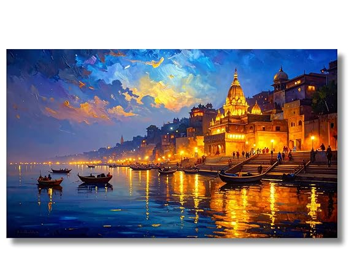

Varanasi is my favorite place in India. It is one of the oldest cities in the world and is famous for the River Ganges, temples, and beautiful ghats. Varanasi is also known as Banaras or Kashi.
Varanasi is a historic city located on the banks of the
River Ganges in Uttar Pradesh, India. The city is famous for
its spiritual atmosphere, ancient temples, colorful streets, and
traditional culture.
Millions of visitors come to Varanasi every year to experience its
history, culture, and religious traditions.

Location: Uttar Pradesh, India
Best Time to Visit: October to March
Famous For: River Ganges, Ghats, Temples and Culture
To learn more about Varanasi, visit the official tourism website:
Incredible India - Varanasi
Varanasi is a beautiful and historic city that offers visitors a unique experience of Indian culture and tradition.